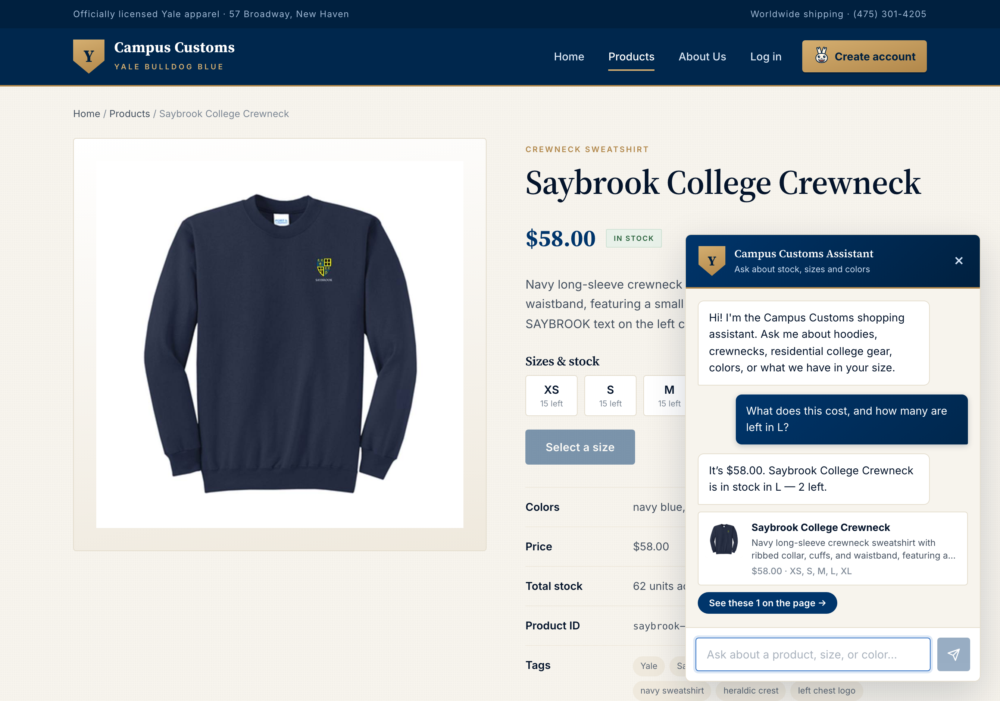
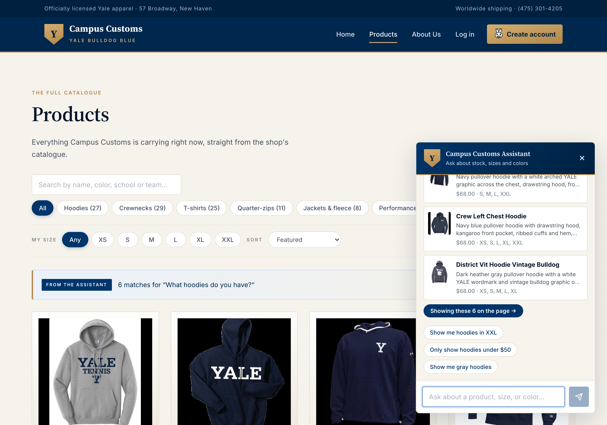
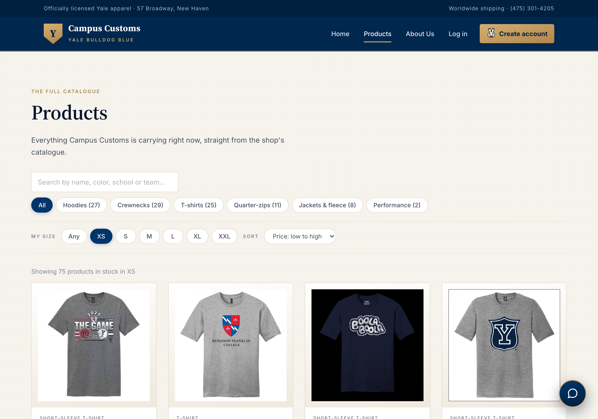

The chat quotes a real item's price and stock
On the Saybrook College Crewneck page, the assistant was asked “What does this cost, and how many are left in L?” — a question with no product named in it.

What this proves
The agent resolved “this” to the open product and then read the catalogue and inventory tables rather than recalling anything — the price and the count of two come from the database on that request. The page's own size grid behind the chat shows the same numbers, so the two paths into the data agree.
| Assistant said | Database holds | |
|---|---|---|
| “It’s $58.00” | price = 58.0 | match |
| “in stock in L — 2 left” | inventory: L = 2 | match |
| card lists XS, S, M, L, XL | XXL = 0, all others > 0 | match |
A category question redraws the product grid
Starting on the Products page with all 102 products on screen, the assistant was asked “What hoodies do you have?”

What this proves
The agent's structured results drive the page, not just the chat bubble: the grid dropped from 102 cards to the six it matched, each a full product card with image, name, price and short description, and each linking to its own product page. The grid's product ids and their order are identical to what the API returned, so nothing is being re-derived or guessed in the browser.
| Observed | Expected | |
|---|---|---|
| grid 102 → 6 cards | result limit of 6 | match |
| banner: “6 matches for …” | six products returned | match |
| “There are 27 hoodie matches” | 27 hoodies in the catalogue | match |
| grid ids vs API ids | identical, same order | match |
Usability: filter by your size, then sort by price
One of the Problem 9 improvements. XS was selected in the size filter and the sort set to Price: low to high.

What this proves
The filter reads real inventory, not a product's size list on paper: 75 of the 102 products have XS actually in stock, and no sold-out card appears while a size is selected. That matters because 145 of the 612 size rows in this catalogue are at zero — roughly a quarter of every browse was previously a dead end a shopper only discovered by opening the product.
| Observed | Database | |
|---|---|---|
| “Showing 75 products in stock in XS” | 75 products with XS > 0 | match |
| prices ascending from $32 | catalogue minimum is $32 | match |
| no “sold out” badge shown | filter excludes zero stock | match |